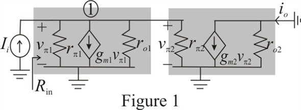

Apply nodal analysis at node-1.
As , the value of the  can be neglected.
can be neglected.
 …… (1)
…… (1)
Here, represents the input resistance  .
.

Therefore, the expression fro the input resistance  is .
is .
Refer to Figure P8.20 in the text book.
Draw the small signal equivalent circuit diagram.

Apply nodal analysis at node-1.
As , the value of the can be neglected.
…… (1)
Here, represents the input resistance .
Therefore, the expression fro the input resistance is .
Observe that the resistance  is shorted. Therefore, the value of the output current is equal to the value that is
is shorted. Therefore, the value of the output current is equal to the value that is  since, .
since, .
Recall equation (1).

Substitute for .
Therefore, the expression fro the current gain is, .
Disconnect the input source and apply a voltage of at the output terminals supplying a current of into the circuit.
Apply nodal analysis at node-1.
Therefore, the value of the voltage  is
is  .
.
 .
.
Substitute  for .
for .
Here, represents the output resistance  .
.
Therefore, the expression for the output resistance  is .
is .